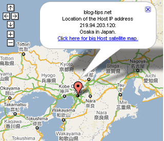

首都圏のブログをバックアップ
グーグルニュースで「M8」と検索してみますと、余震の発生している地域の周辺で、Ｍ８級の地震の可能性が高くなっているという情報が多数見受けられます。
万一地震で家などがすべて流されてしまった場合、定期的な収入になるアフィリエイトブログがあるのとないのとでは、その後の生活に大きな影響が出てくるものと思います。
そんなわけで、東北地方や首都圏にあるサーバーを利用しているブログの場合は、一応バックアップしておくことをおすすめします。
ちなみに、当ブログはどこにあるのかを調べてみますと大阪のようです。

つまり、当サイトが借りているレンタルサーバーが大阪にあり、そのハードディスクのなかに、htmlやcssなどの当ブログのデータが格納されていることになります。
もし地震で大津波がきて、レンタルサーバーが流されてしまったら、当ブログも消滅してしまうことになってしまうわけです。
大阪の場合はたぶん大丈夫かと思いますので、特に心配することはないと思いますが、東北や関東に位置するレンタルサーバーを利用している場合は、どこか違う地域にバックアップをとっておくのがよいでしょう。
この調べ方についてですが、ドメイン名からipアドレスを調査し、そして調べたipアドレスからおおよその場所と地域を調べるということになります。
実際に被災してしまったら、しばらくの間はネットにアクセスできなくなるでしょうから、できれば、ドメインの更新やレンタルサーバーの契約なども長めにしておくのがいいかもしれませんね。
関連：MovableType可能な格安レンタルサーバー
https://blog-tips.net/article/115872348.html